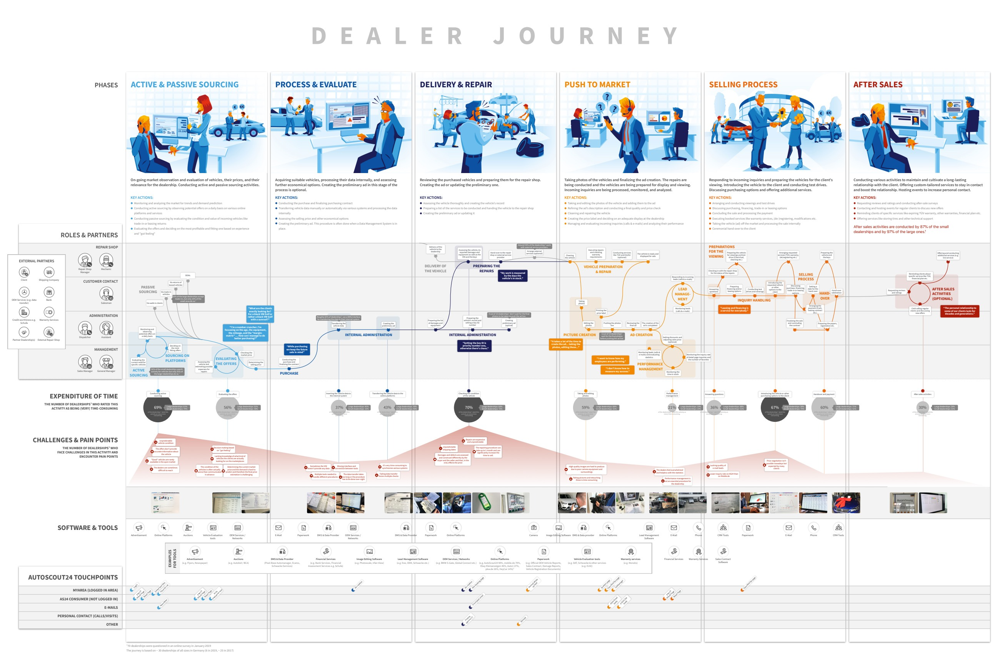
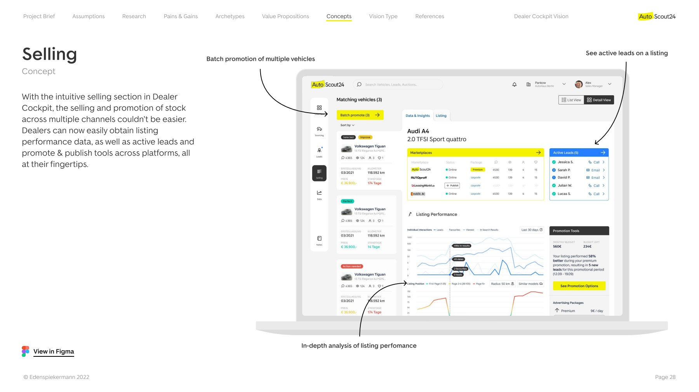

Product strategy · B2B mobility
AutoScout24 · Future dealership tools
Early research and product vision for tools that could fit the daily work of car dealerships.

At Edenspiekermann, I helped lead early research and product vision for AutoScout24's future dealership tools. My role included design direction and client coordination. The team combined dealer and expert interviews with desk research, then translated the findings into dealer archetypes, value propositions and concepts. The October 2022 vision explored a cockpit that brought together a dashboard, selling workflows and data tools for dealers.



